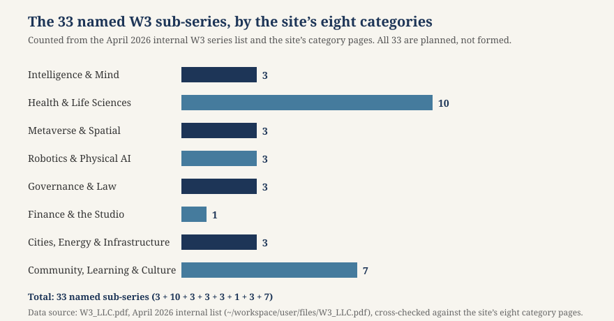

Article 47 · Foundation · AGI Future Foundation
The Research-Coordination Network: The Foundation’s Quietest Job, and Maybe Its Most Important
Every organisation has a sentence in its founding documents that does more work than it looks like it does. For the Foundation, that sentence is the purpose clause, and the part of it that this article is about is the phrase “research and coordination.” The filed purpose covers safe, equitable, and socially beneficial artificial intelligence, and the research and coordination network that serves it. Most of the attention the Foundation receives goes to the first half of that sentence — the ambition to shape artificial intelligence toward safety, equity, and social benefit — and to the most dramatic machinery in the planning documents: the venture studio, the mission gate, the share classes, the Windfall Clause. The second half of the sentence gets almost no attention. It is quiet, unglamorous, and administrative-sounding. It is also, this article argues, the part of the Foundation’s purpose that is most likely to be real, most likely to be useful, and most likely to survive contact with the law — because it is the part that a nonprofit is actually built to do.
Illustration: a network of connected nodes over an open book. Generated illustration, not a photograph of any real place, person, or object.
The phrase in the Articles
A research-coordination network is not a laboratory, not a company, and not a funder. It is the infrastructure that lets other people’s research add up to more than the sum of its parts: it convenes researchers who would otherwise work in isolation, agrees on shared standards so results can be compared, synthesises what is known, and maintains the shared goods no single lab has an incentive to maintain — a benchmark, a dataset, a protocol, a glossary, a registry. It does all of this without owning the research, without directing it, and without taking a share of whatever the research produces. That restraint is the point.
The Foundation’s planning documents describe the research-coordination network as part of the filed purpose, and the companion article on stewardship under California law explains why that matters: the board’s duty of obedience is the duty to keep the organisation faithful to its stated purpose, and the purpose includes coordination. A board that builds the venture studio and neglects the network is not merely making a strategic choice. It is neglecting half of what the Articles say the organisation exists to do. The network deserves to be taken seriously as a programme in its own right, with its own plan, its own budget, and its own measures of success — not as a decorative phrase that justifies the rest of the structure.
What a research coordination network is
The idea has a history, and the history is useful because it shows what works. The United States National Science Foundation has funded Research Coordination Networks (RCNs) for years, and its FAIROS RCN programme — Findable, Accessible, Interoperable, Reusable Open Science Research Coordination Networks — is a clear statement of the model. FAIROS RCNs fund the creation of three-year networks designed to accelerate the adoption of FAIR data principles and broader open-science practices across the research community. The central idea is to support networks of investigators who can make practical, community-level improvements in how research products — data, software, workflows, protocols, metadata, and related outputs — are shared, discovered, combined, and reused. Rather than primarily funding new research results in a single lab, the programme emphasises coordination, community alignment, and the infrastructure and standards that help science move faster and more transparently.
The activities a FAIROS network supports are the activities of coordination itself: organising workshops and working groups, building collaborations among researchers and stakeholders, coordinating ongoing or planned research activities to reduce duplication and improve interoperability, and producing synthesis efforts that consolidate knowledge across projects. A key expected outcome is the development or improvement of community standards, norms, and practices that make research outputs easier to locate, access appropriately, integrate with other resources, and reuse responsibly. Proposals choose between two tracks: disciplinary improvements, focused on a targeted scientific community, and cross-cutting improvements, aimed at approaches that apply broadly across many disciplines. The programme is explicit that coordination is the work, not the prelude to the work.
The same pattern appears outside the NSF. In marine science, researchers at the National Oceanic and Atmospheric Administration’s National Marine Fisheries Service faced a familiar problem: six regional research centres, each with its own workflows and documentation. A coordinated initiative replaced isolated workflows with an interconnected network anchored by living lab manuals — continuously updated documents combining technical guidance with operational standards and communication protocols — and used peer onboarding, shared templates, and dedicated co-working sessions to unify practice across the centres. The lesson, reported in a case study of open-science adoption at NOAA Fisheries, is that the barriers to open science are often not technical but organisational: people do not share because sharing is hard, because no one maintains the shared thing, and because no one is rewarded for doing so. A coordination network exists to lower those barriers, one template and one onboarding session at a time.
The Foundation’s network, if it is built, would be a version of this model applied to a different field: the safety, equity, and social benefit of artificial intelligence. The field is younger than marine acoustics and more fragmented, and the stakes are higher, but the coordination problem is the same. Researchers, builders, evaluators, and policymakers are producing work that cannot easily be compared, combined, or built upon, because there are no shared standards for what counts as evidence, no shared benchmarks for what counts as safe, and no shared record of what has already been tried. A network that fixed even a small part of that — a common evaluation protocol, a shared registry of results, a synthesis of what is known about a particular risk — would be doing work that no single lab, company, or funder is positioned to do alone.
Three jobs, not one
It helps to name the three jobs the Foundation’s design contains, because they are constantly confused with each other, and confusing them is how the Foundation would get into trouble — with the IRS, with donors, and with its own board.
The first job is research: doing the work of finding things out. A lab that trains a model, runs an evaluation, or publishes a paper is doing research. The Foundation’s filed purpose includes research, and the Foundation could, in principle, do research itself — hire researchers, run studies, publish results. But research is expensive, slow, and competitive, and a small foundation with no staff and no determination letter is not in a position to do it at any scale. More importantly, research done by the Foundation itself would raise the question of who the research serves: if the Foundation’s own researchers evaluate the Foundation’s own series companies, the evaluation is not independent, and its credibility is spent before it is published.
The second job is building: turning research into products, companies, and services. That is the job of the venture studio and the operating series — the proposed W3 companies, the proposed SmartCiti.X corporation, the Delaware cohort series. Building is a commercial job, and it belongs, in the Foundation’s own design, to the for-profit side of the family: AGI Corp as the intended head, the series as the operating companies. The Foundation’s role in building is the mission gate — setting the standard and deciding whether a proposal meets it — not building the thing itself. The companion article on the Mission Gate describes that flow in detail.
The third job is coordination: the infrastructure that lets the first two jobs add up. Convening, standard-setting, synthesis, registries, shared evaluation protocols, open data practices. Coordination is the job the Foundation is best positioned to do, for three reasons. First, it is a charitable activity in the plainest sense: it produces public goods — standards, syntheses, open protocols — that benefit the whole field rather than any single company. Second, it is the job that requires neutrality, and a nonprofit that does not own the companies it coordinates is more neutral than any of the companies themselves. Third, it is the job that the Foundation can start small: a working group, a shared document, a published synthesis, a single evaluation protocol. It does not require a bank account, a series designation, or a Steward Council. It requires a convenor, a mailing list, and the discipline to publish what was agreed.
| Job | Who does it (intended design) | What it produces | Foundation’s role |
|---|---|---|---|
| Research | Labs, researchers, universities | Findings, papers, evaluations | Funder, convenor, publisher — not the lab itself |
| Building | Operating series, AGI Corp (intended) | Companies, products, services | Mission gate only — sets the standard, decides fit |
| Coordination | The network (proposed) | Standards, syntheses, registries, protocols | Owner and operator — this is the Foundation’s own programme |
What coordination would look like, in practice
A coordination network is an abstraction until someone says what it will do on a Tuesday. This section tries to say that, in concrete terms, while keeping the honest frame: none of this exists yet, and each item below is a proposal for the Foundation’s board and counsel to consider, not a description of something that has happened.
A shared evaluation protocol. The most useful thing a coordination network can produce is agreement on how to tell whether something works — and, for AI safety, whether something is safe. Today, evaluations of AI systems are produced by many different parties, using different benchmarks, prompts, scoring, and reporting, which makes them hard to compare and easy to game. A network could convene evaluators, researchers, and builders to agree on a protocol: what is measured, how it is measured, how results are reported, and what the limits of the measurement are. The protocol would be published openly, versioned, and revised in public. The Foundation would not run the evaluations itself — that would compromise its neutrality — but it would maintain the protocol, convene the group that revises it, and publish the registry of results reported against it.
A synthesis programme. The field of AI safety and AI equity produces far more papers than any one person can read, and the papers do not add up on their own. A network could produce syntheses: careful, attributed reviews of what is known about a particular question — for example, what evaluation methods exist for a particular risk, or what is known about the effects of a particular deployment. A synthesis is not a new result. It is a map of existing results, with gaps marked. It is also the kind of work that funders rarely pay for and labs rarely reward, which is precisely why a nonprofit network is the right home for it. The Foundation’s site already publishes long-form articles that synthesise its own plans; a synthesis programme would apply the same discipline to the field’s knowledge, with the same honesty rules — no invented statistics, no unverified claims, sources listed.
A registry. The Foundation’s own planning documents already imagine registries: a Cohort/Series Register that records which proposals were received, which passed the mission gate, and which were declined, with reasons. A research-coordination network could maintain a public registry of a different kind: a registry of evaluations, datasets, and protocols, so that a researcher can find what exists before building something new. A registry is a humble artefact — a list, kept up to date — but it is the artefact that prevents duplication, and duplication is the most expensive failure in a young field. The registry would be public, versioned, and maintained by the network, not by any single company.
Convening. The least glamorous and most important activity: getting the right people in the same room, regularly, with an agenda, and publishing what was decided. The Stanford PACS tradition, which the Foundation borrows for its stewardship model, emphasises listening to beneficiaries and grantees, being transparent and responsive, and providing assistance beyond the grant. A network that convenes well — with published agendas, published notes, and open invitations — builds the trust that makes standards stick. A network that convenes badly — closed meetings, unpublished decisions, invitations that go only to friends — builds a club. The difference is visible in the record, and the record is public.
Why a nonprofit is a plausible home
There is a reason the Foundation’s purpose clause puts research and coordination in a nonprofit, and it is not sentiment. It is the economics of public goods. A standard, a synthesis, a registry, and a protocol are all things that benefit everyone and can be owned by no one in particular. A for-profit company has little incentive to produce them, because it cannot capture the value: if a company writes the standard, its competitors use it for free. A government can produce them, but slowly, and with political constraints. A university can produce them, but within the incentives of publication and tenure, which reward new results over maintenance. A nonprofit whose purpose is the field itself — not a product, not a paper, not a profit — is the institution with the least reason not to do the maintenance work, and the most reason to do it well.
The third reason is the simplest: the Foundation’s charitable purpose, as filed, already covers this work. Research and coordination toward safe, equitable, and socially beneficial AI is a recognisably charitable programme — scientific, educational, and charitable in the sense the IRS uses those words — and it is the programme that the Foundation can describe in its application for recognition of exemption with the least strain. The companion article on the 501(c)(3) determination path explains that the IRS will ask what the Foundation actually does, and that a concrete coordination programme — convenings held, standards published, syntheses released, a registry maintained — is the kind of answer that satisfies the operational test.
How the network differs from the studio and the gate
The Foundation’s design contains three institutions that are easy to confuse, and this section draws the lines between them, because the lines are the design.
The venture studio is the commercial engine in the intended plan: a function of AGI Corp, the intended for-profit head, that builds ventures, moves them through six stage gates, and holds them to a mission standard. It has not been built, its head company has an EIN and no verified incorporation, and most of the ventures in its portfolio are names. The studio’s job is to build companies. The network’s job is to coordinate research. The studio is judged by whether its companies succeed. The network is judged by whether the field’s knowledge improves. Those are different measures, and a single institution cannot be judged by both at once without one of them being sacrificed.
The mission gate is the seven-stage flow — intake, mission screen, legal assignment, series designation, Steward Council review, human decision, execution and record — that decides what gets built under the family name. It is described in the site’s feature on the Mission Gate and in the operations pages. The gate is a decision mechanism: it says yes or no. The network is not a decision mechanism. It does not say yes or no to anything. It publishes, convenes, and synthesises, and it leaves the deciding to others. The gate is the Foundation’s power. The network is the Foundation’s service. A foundation that confuses the two — that uses the network to reward its friends and punish its critics — has turned a commons into a weapon, and the field will notice.
The Steward Council is the human backstop in the intended design: three consenting humans, deciding by two-of-three signed votes, who are the only authority that can enact, decline, or amend a charter, or move funds for a series. It is described in the site’s feature on the Steward Council. No council has been seated for any series yet. The council governs companies. The network has no companies to govern, and it needs no council: it needs an editor, a convenor, and a maintainer. The network’s legitimacy comes from the quality of its outputs and the openness of its process, not from the authority of its governors.
The 33-series map as a coordination problem
The Foundation’s own portfolio is itself a coordination problem, and it is worth looking at it that way. The April 2026 internal W3 series list names 33 sub-series, grouped by the site’s own eight categories. Counted from the site’s category pages, the distribution is: Intelligence & Mind, 3; Health & Life Sciences, 10; Metaverse & Spatial, 3; Robotics & Physical AI, 3; Governance & Law, 3; Finance & the Studio, 1; Cities, Energy & Infrastructure, 3; and Community, Learning & Culture, 7. That adds to 33, and the chart below shows it.

Chart: the 33 named W3 sub-series, by the site’s eight categories. Data source: W3_LLC.pdf, the April 2026 internal list, cross-checked against the site’s eight category pages. All 33 series are planned, not formed, funded, or offered.
Read as a coordination problem, the map is revealing. Health & Life Sciences is the largest category, with ten series, and it is the category where the Foundation’s honesty standard matters most — because a wrong claim about a treatment can harm a person, while a wrong claim about a learning tool wastes an afternoon. A coordination network that started in health would have the most to do and the most to lose: shared evaluation standards for diagnostic tools, shared data practices for health records, a synthesis of what is known about AI in clinical settings. Community, Learning & Culture, with seven series, is the category where the questions are least technical and most human — meaning, belief, care, gathering — and where a network’s convening function would matter most, because the expertise is distributed across communities rather than concentrated in labs.
What it is not yet
The honest frame for this article is that the network does not exist. It is worth listing, concretely, what would have to be true before anyone could say it does — because a network is easy to announce and hard to build, and the difference between the two is visible in the record.
First, a charter: a published document that says what the network is for, who may join, how decisions are made, and how the network’s outputs are licensed. Second, members: named researchers, labs, or organisations that have agreed to participate, with their agreement on the record. Third, a convening: a first working group, workshop, or meeting, held, with an agenda and notes published. Fourth, an output: a standard, a synthesis, a protocol, or a registry entry, published openly, with a version number and a date. Fifth, a maintainer: a named person or role responsible for keeping the outputs up to date, because a standard that is published once and never revised is a document, not a programme. Sixth, a budget: a stated amount, from stated sources, that pays for the convening, the maintenance, and the publication — with the sources disclosed, so that the network’s independence can be checked.
None of those six things exists today. The Foundation has no staff, no determination letter, no bank account verified as open, and no board of three. That is not a criticism. It is a description of a young organisation, and young organisations should start with the work they can do rather than the work they wish they could do. The network is the work the Foundation can start with the least: a charter can be drafted, a working group can be convened, a synthesis can be written, and a registry can be opened, all before the determination letter arrives and before any company is formed.
There is a related risk worth naming: the network could become a way of laundering the rest of the structure. A foundation that publishes a research network’s standards, and then uses those standards to justify its own companies’ claims, has created a closed loop — the Foundation certifies the work, the work certifies the Foundation. The safeguard is the same as in the stewardship article: independence, transparency, and the willingness to publish results that are inconvenient. A network that publishes a synthesis finding that a particular approach does not work, or that a series company’s evaluation was flawed, is a network doing its job. A network that only ever publishes good news about its own family is a marketing department.
How success would be measured
A coordination network that cannot say how it will know whether it is working is not a programme. It is a hope. The measures below are modest, and deliberately so — they are the measures of a commons, not of a company. None of them involves money raised, valuations, or companies formed, because those are the studio’s measures, not the network’s.
- Use. Are the network’s standards, protocols, and syntheses actually used — cited, adopted, built upon — by people who are not the Foundation?
- Reuse. Are the network’s outputs findable, accessible, interoperable, and reusable, in the FAIR sense — and can the network show it, with links, licences, and version histories?
- Synthesis. Has the network published syntheses that the field relies on — and updated them when the knowledge changed?
- Convening. Are the network’s meetings open, minuted, and published — and do the participants include people who disagree with each other?
- Independence. Can the network show that its outputs are not determined by the Foundation’s commercial relationships — for example, by publishing evaluations or syntheses that are inconvenient to the family?
- Maintenance. Are the network’s outputs kept up to date — or do they go stale, like a registry that was opened once and never touched again?
A network that can answer those six questions with evidence is a successful network, whether or not it ever grows large. The Foundation should publish those answers annually, alongside its Form 990, so that the public can judge the network by its own measures rather than by its aspirations.
What still has to be done
The Foundation’s research-coordination network is, at the time of writing, a phrase in a purpose clause and a set of intentions in planning documents. Turning it into a programme requires a short list of concrete steps, none of which depends on the venture studio, the share classes, or the Windfall Clause.
First, draft and publish the network’s charter: purpose, membership, decision-making, licensing, and the independence safeguards that keep the network a commons rather than a moat. Second, convene a first working group — small, focused, and open — on a question where coordination would help now, such as a shared evaluation protocol for one well-defined task. Third, publish a first synthesis: a careful, attributed review of what is known about that question, with gaps marked and sources listed. Fourth, open the registry: a public, versioned list of evaluations, datasets, and protocols, maintained by a named maintainer. Fifth, file the overdue Statement of Information and the application for recognition of exemption, so that the network’s home — the Foundation itself — is in good standing and can receive the donations and grants that would fund the network’s work. Sixth, report annually on the six measures above, so that the network is judged by its outputs rather than its intentions.
None of those steps requires a company to be formed, a SAFE to be issued, or a valuation to be suggested. All of them are within the Foundation’s power today, or will be as soon as its board is seated. The network is the Foundation’s quietest job, and it is the one that asks the least of the future and the most of the present. That is why it is the right place to start.
Glossary
- Research coordination network (RCN) — A network that convenes researchers, agrees on shared standards, synthesises knowledge, and maintains shared infrastructure, without owning or directing the research itself.
- FAIR principles — Findable, Accessible, Interoperable, Reusable: the standard for research outputs, from the FAIROS RCN programme.
- FAIROS RCN — The NSF programme funding Research Coordination Networks for FAIR Open Science (Funding Opportunity 22-553).
- Synthesis — A careful, attributed review of what is known about a question, with gaps marked; a map of existing results, not a new result.
- Evaluation protocol — An agreed method for measuring whether a system works or is safe: what is measured, how, and how results are reported.
- Registry — A public, versioned list of evaluations, datasets, protocols, or proposals, kept up to date by a named maintainer.
- Mission gate — The Foundation’s seven-stage flow (intake, mission screen, legal assignment, series designation, Steward Council review, human decision, execution and record) that decides what gets built under the family name.
- Venture studio — In the intended design, a function of AGI Corp that builds ventures and moves them through stage gates; not a function of the Foundation.
- Operational test — The IRS test of whether an organisation’s actual activities primarily further its exempt purposes.
Frequently asked questions
Does the Foundation’s research-coordination network exist yet? No. The phrase “research and coordination” is in the Foundation’s filed purpose, but no network has been convened, no members have joined, and no standards have been published. This article describes what the network could be.
What is a research coordination network? A network that convenes researchers, agrees on shared standards, synthesises what is known, and maintains shared infrastructure — registries, protocols, benchmarks — without owning or directing the research itself. The NSF’s FAIROS RCN programme is the clearest model.
How is the network different from the venture studio? The studio builds companies; the network coordinates research. The studio belongs to the intended for-profit side of the family (AGI Corp). The network is the Foundation’s own charitable programme.
How is the network different from the mission gate? The gate decides yes or no about what gets built under the family name. The network does not decide anything; it publishes, convenes, and synthesises. The gate is the Foundation’s power; the network is its service.
Why is a nonprofit a good home for a network? Because standards, syntheses, and registries are public goods: they benefit everyone and can be owned by no one in particular. A nonprofit that does not own the companies it coordinates is a more neutral convenor than any of the companies themselves.
What would the network’s first outputs be? A published charter, a first working group on a shared evaluation protocol, a first synthesis, and a public registry — all open, versioned, and maintained by a named maintainer.
Does the network involve the 33 W3 series? The 33 named series are the map the network would work with, not the network itself. The network would ask, for each part of the map, whether there is research to coordinate and knowledge to synthesise — and say plainly where the answer is no. All 33 series are planned, not formed, funded, or offered.
Sources
- National Science Foundation, Findable Accessible Interoperable Reusable Open Science Research Coordination Networks (FAIROS RCN, Funding Opportunity 22-553) — hudgrants.org (found in search): the RCN model, three-year networks, coordination and community alignment over new results in a single lab, disciplinary and cross-cutting tracks.
- NOAA Researchers Share Strategies for Cultivating Open Science Across Marine Acoustics Teams — bioengineer.org (found in search): the NOAA Fisheries open-science case study, living lab manuals, peer onboarding, and shared templates across six regional centres.
- Stanford PACS, Effective Philanthropy Learning Initiative — pacscenter.stanford.edu/research/effective-philanthropy-learning-initiative (found in search): effective philanthropy as grounded in respectful and trusting relationships, long-sighted, and oriented to learning and adaptation.
- AGI Future Foundation, The Mission Gate and The Steward Council (features) — agifuturefoundation.org/features/feature-12-the-mission-gate.html and feature-13-the-steward-council.html (local site files): the intended mission-gate flow and Steward Council design; neither is live.
- Local files: Foundation filing documents reviewed 2026-11-03 (Articles, SOS approval, SF registration, IRS CP575A); Structure v2 planning documents (2026-11-03); W3_LLC.pdf, April 2026 internal list of 33 named sub-series (~/workspace/user/files/W3_LLC.pdf);
~/workspace/your_files/hostinger-email/sites/agifuturefoundation.org/(site files, including the eight category pages counted for the chart).
This article is general information, not a programme announcement and not legal advice. The network described here does not exist yet; the Foundation’s board should confirm every step before relying on it.
← Stewardship Under California Law | ← The 501(c)(3) Determination Path